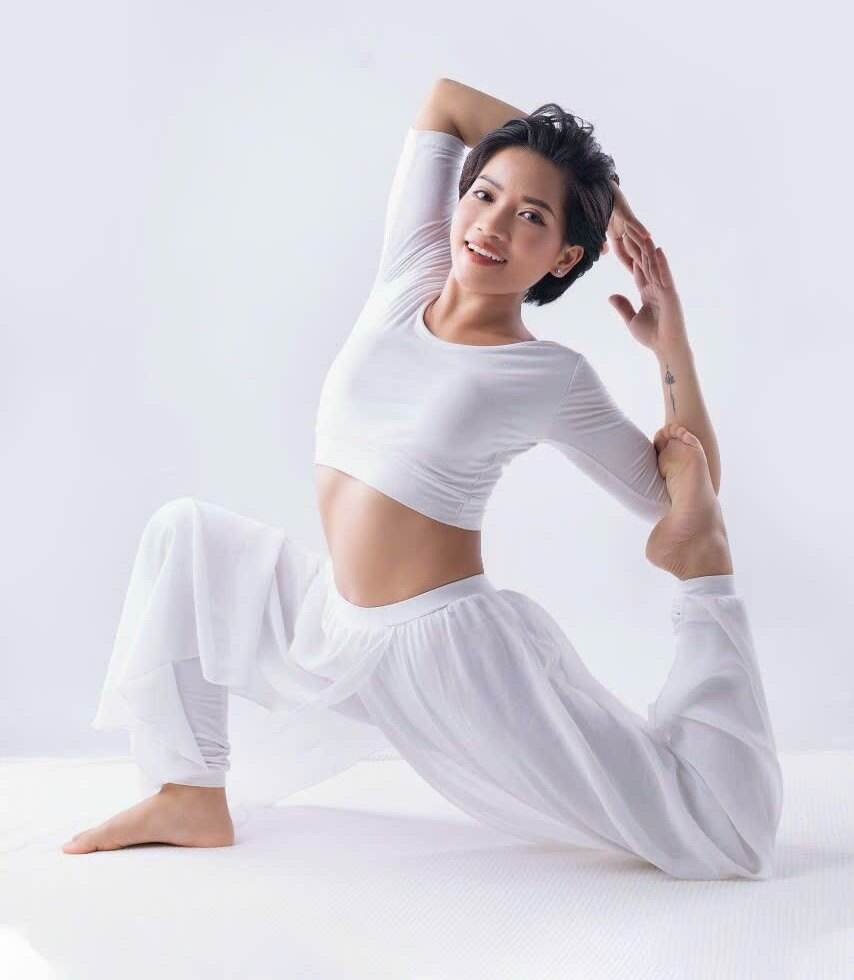

Yoga người lớn · Các phép thở trong Yoga
Thở bễ lò rèn (Bhastrika): đánh thức ngọn lửa trong người

Ai từng thấy lò rèn chắc còn nhớ chiếc bễ thổi lửa. Phù, phù, phù. Mỗi lần bễ thổi, than trong lò đỏ rực lên một nấc.
Thở bễ cũng như vậy. Hít vào mạnh. Thở ra mạnh. Đều, như nhịp bễ.
Sau một lượt, cả người nóng lên, mắt sáng ra, đầu óc tỉnh như vừa rửa mặt nước lạnh. Nhưng lửa thì phải biết giữ. Bài này, cô dặn kỹ hơn mọi bài khác.
- Là gì?
- Nguồn gốc
- Vì sao?
- Lợi ích
- Ai không nên tập
- Cách thực hiện
- Video tập cùng
- Những người có thật
- Nguồn tham khảo
Thở bễ lò rèn (Bhastrika) là gì?
Bhastrika (đọc “bas-tri-ka”) nghĩa là cái bễ, cái túi thổi lửa. Người tập hít vào và thở ra bằng mũi, cả hai chiều đều chủ động, mạnh và đều nhau. Bụng phồng lên khi hít, thóp vào khi thở ra.
- 1Hít mạnhbụng phồng
- 2Thở mạnhbụng thóp
- 3Lặp 10 lầnmột lượt
- 4Nghỉthở tự nhiên
Khác với Kapalabhati ở đâu? Kapalabhati chỉ thở ra mạnh, còn hít vào thì để tự nhiên. Bhastrika thì cả hít lẫn thở đều mạnh như nhau. Vì vậy Bhastrika tốn sức hơn, làm nóng người hơn, và cũng dễ làm choáng hơn nếu tập sai.
Nguồn gốc
Sách Hatha Yoga Pradipika dành cho Bhastrika nhiều câu nhất trong tám kiểu kumbhaka, từ câu 59 tới câu 67. Người tập ngồi kiết già, cổ và bụng thẳng, “thở ra hít vào như chiếc bễ của người thợ rèn”, cho tới khi mệt thì hít vào bằng mũi phải, giữ hơi, rồi thở ra bằng mũi trái.
“Như người thợ rèn bóp chiếc bễ thật nhanh, người tập cũng đưa hơi thở ra vào như vậy.”
Hatha Yoga Pradipika, chương 2, câu 62 (cô dịch ý)Sách cũng gọi đây là bài thở làm ấm thân, nhóm lên “lửa tiêu hóa”. Cô hiểu chữ “lửa” ấy theo nghĩa giản dị: sau một lượt thở bễ, người ấm lên thật.
Ở Việt Nam, Bhastrika được biết nhiều qua các lớp yoga của thầy Baba Ramdev (Ấn Độ) phát trên truyền hình. Cách của thầy có phần nhẹ hơn: thở sâu và mạnh, nhịp vừa phải. Bài này cô cũng hướng dẫn theo hướng nhẹ, an toàn cho người mới.
Vì sao thở bễ làm mình tỉnh táo?
Khi thở nhanh và mạnh, cơ thể hiểu rằng mình sắp phải vận động. Tim đập nhanh hơn một chút, người nóng lên, đầu óc tỉnh. Gần giống lúc mình vừa chạy bộ vài phút.
Nhưng cũng vì vậy mà dễ quá đà. Thở nhanh quá lâu làm khí CO₂ trong máu giảm xuống. Đầu nhẹ bẫng, tê đầu ngón tay, quanh miệng, có khi hoa mắt. Đó không phải “năng lượng đang lên”. Đó là dấu hiệu thở quá sức, cần dừng.
Một điều ít người biết: khi tập chậm, Bhastrika lại có tác dụng ngược. Một nghiên cứu năm 2009 cho người khỏe mạnh thở bễ thật chậm, sâu, khoảng 6 hơi mỗi phút trong 5 phút. Sau đó huyết áp của họ giảm, nhịp tim chậm lại nhẹ. Cùng một bài thở, nhanh thì đánh thức, chậm thì làm dịu.
Lợi ích và tác dụng
Một nghiên cứu có thật. Năm 2009, nhóm của bác sĩ Tanuja Pramanik đăng trên tạp chí Journal of Alternative and Complementary Medicine kết quả cho những người khỏe mạnh tập Bhastrika chậm trong 5 phút. Huyết áp tâm thu và tâm trương giảm rõ, nhịp tim giảm nhẹ.
Còn Bhastrika nhanh, kiểu “bễ lò rèn” trong sách cổ, thì nghiên cứu nghiêm túc còn ít. Cô không muốn kể những lợi ích chưa ai đo được.
☀️ Tỉnh ngủ buổi sáng
Một hai lượt ngắn sau khi thức dậy, thay cho cốc cà phê đầu tiên.
🔥 Ấm người
Ngày lạnh, trước buổi tập. Bài này làm nóng, ngược hẳn với thở làm mát.
🫁 Cơ hoành khỏe hơn
Bụng phồng, thóp đều đặn giúp mình cảm được cơ hoành, nhóm cơ thở chính.
🎯 Gom tâm lại
Phải đếm, phải giữ nhịp đều, nên tâm không chạy lung tung được.
🧘 Trước khi ngồi thiền
Sau lượt thở bễ là khoảng lặng rất rõ. Nhiều người thấy ngồi thiền dễ hơn.
🐢 Bản chậm làm dịu
Như nghiên cứu ở trên: thở bễ chậm, sâu giúp huyết áp hạ.
Đọc trên mạng có nơi nói thở bễ “chữa” đủ thứ bệnh. Cô không viết như vậy được. Nó là một bài thở mạnh, có ích khi tập đúng, và có hại khi tập sai.
Ai không nên tập, hoặc cần thận trọng
- Phụ nữ mang thai, đang trong những ngày hành kinh: không tập. Bụng co bóp mạnh liên tục không phù hợp.
- Tăng huyết áp, bệnh tim, từng bị tai biến: không tập bản nhanh. Bản thật chậm chỉ tập khi bác sĩ đồng ý và có người hướng dẫn.
- Động kinh, hay chóng mặt, rối loạn tiền đình: không tập. Thở nhanh có thể gây choáng.
- Thoát vị (bẹn, rốn, đĩa đệm), mới mổ bụng hoặc ngực, loét dạ dày: không tập. Áp lực trong bụng tăng lên.
- Tăng nhãn áp, bong võng mạc, bệnh tai: không tập.
- Hay hoảng loạn, lo âu nặng: thở nhanh có thể gây đúng cảm giác của cơn hoảng. Chọn thở ong vo ve hoặc thở chậm.
- Hen suyễn, đang cảm cúm, nghẹt mũi: đợi khỏe lại.
Dừng ngay nếu thấy khó chịu. Dừng ngay nếu thấy chóng mặt, tê ngón tay hay quanh miệng, hoa mắt, đau đầu, tim đập dồn. Thở tự nhiên thật chậm. Lần sau ít hơi hơn, chậm hơn.
Phần này cô viết từ kinh nghiệm đứng lớp và các nguồn ở cuối bài. Nó không thay lời khuyên của bác sĩ.
Cách thực hiện từng bước
Chuẩn bị. Ngồi thẳng lưng trên gối hoặc ghế, không tựa. Tập lúc bụng đói, tốt nhất buổi sáng. Xì mũi cho sạch. Hai tay đặt trên gối. Thở bằng mũi suốt bài, miệng khép.
- Hít thở tự nhiên vài hơi, thả lỏng vai và mặt.
- Hít vào mạnh bằng mũi, bụng phồng ra. Khoảng 1 giây.
- Thở ra mạnh bằng mũi, bụng thóp vào. Cũng khoảng 1 giây. Hít và thở dài bằng nhau, lực bằng nhau.
- Làm 10 hơi như vậy. Đó là một lượt. Đầu và vai đứng yên, chỉ bụng chuyển động.
- Nghỉ, thở tự nhiên 15 đến 30 giây. Cảm nhận hơi ấm, tiếng tim, sự tỉnh táo.
- Tập 2 đến 3 lượt. Xong, ngồi yên một lúc trước khi đứng dậy.
Tập dần, không vội
Tuần đầu, 1 hơi mỗi 2 giây cũng tốt. Thấy thoải mái mới lên 1 hơi mỗi giây. Đừng tăng số hơi trước khi tăng độ đều. Bản nhanh hơn, có giữ hơi, khóa bụng, cô chỉ dạy trực tiếp.
Lỗi cô hay gặp ở lớp
Nhún vai, lắc đầu theo nhịp. Hít mạnh mà thở ra yếu. Gồng mặt. Cố làm nhanh cho “giống video”. Cô nhắc: chậm mà đều quý hơn nhanh mà lộn xộn.
Lúc nào thì dùng?
Buổi sáng, khi người còn nặng. Ngày lạnh. Trước buổi tập. Không tập buổi tối gần giờ ngủ, sẽ khó ngủ.
Video và vòng tròn tập cùng cô
Video dưới đây tập cùng bạn 2 lượt, mỗi lượt 10 hơi bễ (1 giây hít, 1 giây thở), nghỉ 15 giây. Đây là nhịp vừa cho người mới. Thấy choáng thì dừng, không cần theo hết.
Muốn tập lâu hơn? Dùng vòng tròn này. Bấm Bắt đầu, thở theo chữ và theo vòng tròn. Nút Chậm hơn kéo dài mỗi nhịp thêm một chút. Bật Âm thanh để nhắm mắt mà vẫn theo được.
Những người có thật
Cô không viết ra những câu chuyện không có thật. Dưới đây là những người có thật, và câu chuyện của họ đã được công bố.
Những người tình nguyện trong nghiên cứu năm 2009
Họ là những người khỏe mạnh bình thường, ngồi thở bễ thật chậm trong 5 phút. Huyết áp đo được sau đó thấp hơn trước. Câu chuyện nhỏ này cho cô một bài học: cùng một bài thở, cách tập làm nên khác biệt.
💛 Câu chuyện từ lớp của cô
Cô đang gom những lời kể thật của học viên lớp Thở cơ bản và các lớp yoga người lớn. Khi các bạn đồng ý, cô sẽ đăng ở đây, giữ nguyên lời các bạn kể.
Bạn đã tập bài thở này và thấy mình khác đi? Nhắn cô qua Zalo 0349 270 304 nhé.
Ngọn lửa cần người giữ
Lửa sưởi ấm được, cũng làm bỏng được. Thở bễ cũng vậy. Tập vừa sức, nó cho mình một buổi sáng tỉnh táo. Tập quá, nó làm mình choáng váng.
Cô mong bạn tập nó như người thợ rèn giỏi: không bóp bễ thật mạnh, mà bóp đều tay.
🌿 Muốn học thở bài bản cùng cô?
Khóa Thở cơ bản 10 buổi đi từ thở bụng, thở chậm tới các bài thở trong yoga, có cô nhìn và chỉnh cho từng người. Ngoài ra còn lớp yoga người lớn online qua Zoom và kèm 1 kèm 1 (500.000đ / giờ).
Các phép thở khác
Nguồn tham khảo
- Hatha Yoga Pradipika, chương 2, câu 59 đến 67 (Bhastrika).
- Pramanik T. và cộng sự (2009). Immediate effect of slow pace bhastrika pranayama on blood pressure and heart rate. Journal of Alternative and Complementary Medicine 15(3): 293–295. pubmed.ncbi.nlm.nih.gov